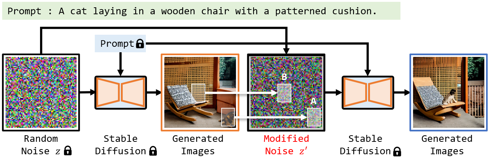
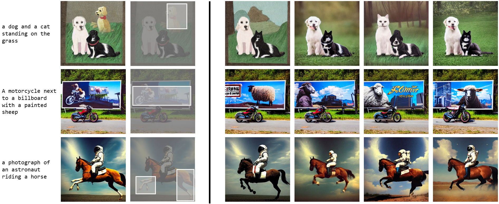
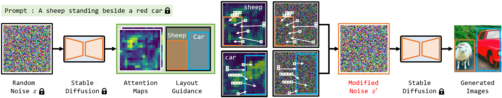

Diffusion models have the ability to generate high quality images by denoising pure Gaussian noise images. While previous research has primarily focused on improving the control of image generation through adjusting the denoising process, we propose a novel direction of manipulating the initial noise to control the generated image. Through experiments on stable diffusion, we show that blocks of pixels in the initial latent images have a preference for generating specific content, and that modifying these blocks can significantly influence the generated image. In particular, we show that modifying a part of the initial image affects the corresponding region of the generated image while leaving other regions unaffected, which is useful for repainting tasks. Furthermore, we find that the generation preferences of pixel blocks are primarily determined by their values, rather than their position. By moving pixel blocks with a tendency to generate user-desired content to user-specified regions, our approach achieves state-of-the-art performance in layout-to-image generation. Our results highlight the flexibility and power of initial image manipulation in controlling the generated image.
We first conduct experiments to check the generation tendency of initial images. Specifically, we create a list of categories and then select two different categories, Cls1 and Cls2, from it to construct prompts for generation. The prompt takes the form of "A Cls1 and a Cls2" (e.g. a dog and a car). We use fixed random initial images and a model with fixed parameters to generate each constructed prompt and observe the generation performance of the same initialization image guided by different prompts. When the same object is mentioned in different prompts, there is a high probability that this object will be generated in the same location and have a very similar visual appearance.
A critical factor contributing to the failure of image generation is the inconsistency between the initial noise image's generation tendency and the user-provided prompts. For instance, if a user intends to generate two objects close to each other, but the two regions that tend to generate these objects are far apart in the randomly generated initial image, the model will fail to generate the desired content based on such an initial image.
Therefore, an intuitive idea to avoid image generation failure is to remove the part of the tendency that conflicts with the prompt. First, we generate an image using prompt and a randomly sampled initialized image. We then identify regions in the generated image that did not match the description or did not make sense. We re-randomize the regions in the initialized image corresponding to the failure regions while keeping the values of the other regions. We use the partially re-randomized initial noise image to perform the generation again, under the same prompt, and observe the generated image. This experiment is straightforward and intuitive yet shows a significant effect. Using the partially re-randomized initial image achieves spontaneous regeneration of only the specified regions while keeping the other regions of the image almost unchanged.
This result shows that the generation tendencies of each region in the initialized image are relatively independent, and changing a small part of the initialized image does not affect the generation tendencies of the remaining part. This experiment implies that by editing the initialized image, we can potentially influence the image generation results in a directional and controlled manner.
We use the attention map of the initial noise image to indicate the initial generation tendency. Subsequently, we move the pixel blocks that tend to generate specific content into specified regions, and the modified noise image is used to perform denoising as usual.
Our method achieves a comparable performance with state-of-the-art methods when used alone, and combining our method with them achieves the best performance on all subsets.
Refer to our latest work for more discussion about initial noise in diffusion!
The Lottery Ticket Hypothesis in Denoising: Towards Semantic-Driven Initialization [ECCV 2024]
@article{mao2023Guided,
author = {Jiafeng Mao, Xueting Wang and Kiyoharu Aizawa},
title = {Guided Image Synthesis via Initial Image Editing in Diffusion Model},
journal = {ACM MM},
year = {2023},
}